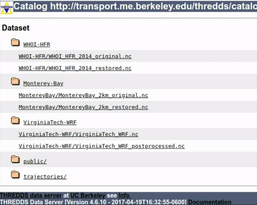

Input Data#
This section offers comprehensive guidance on preparing your datasets to ensure their compatibility as input for restoreio.
Preparing Input Data#
File Format#
The input dataset can consist of one or multiple files, which should adhere to the following formats:
NetCDF file format with file extensions
.nc,.nc4,.ncd, or.nc.gz.NcML file format with file extensions
.ncmlor.ncml.gz. For more information on NcML files, see Single Dataset Stored Across Multiple Files
Note that it is also acceptable to provide a NetCDF file without a file extension.
Best Practice for NetCDF Files#
It is highly recommended to save your data file in NetCDF4 format instead of NetCDF3. For more information, refer to NetCDF4 Package documentation in Python or NetCDF Files in MATLAB.
Also, you may follow the best practice of preparing a NetCDF file, which involves passing the CF 1.8 compliance test using online CF-convention compliance checker. In particular, this involves adding the standard_name attribute to your variables (see Required NetCDF Variables section below). For reference, you can consult the comprehensive list of CF compliance standard names.
.
Required NetCDF Variables#
An input NetCDF file to our application should include all the variables listed in the table below. To ensure proper detection of these variables by our application, each variable should include at least one of the attributes: standard_name, name, or both, as listed in the table. Note that checking the (standard) name is done in a case-insensitive manner.
Variable |
Acceptable Names and Standard Names |
|
|---|---|---|
Time |
Standard Names: |
|
Names: |
|
|
Longitude |
Standard Names: |
|
Names: |
|
|
Latitude |
Standard Names: |
|
Names: |
|
|
Ocean’s Surface East Velocity |
Standard Names: |
|
Names: |
||
Ocean’s Surface North Velocity |
Standard Names: |
|
Names: |
||
Optional NetCDF Variables#
Apart from the required variables mentioned above, you have the option to include the following additional variables in your input file. Note that there is no standard name established for these variables, so you should provide a <code>name</code> attribute according to the table. These variables are used exclusively for the purposes of uncertainty quantification by generating data ensembles. For more details, you may refer to the Generating Ensembles section.
Variable |
Acceptable Standard Names |
Acceptable Names |
|---|---|---|
Ocean’s Surface East Velocity Error |
N/A |
|
Ocean’s Surface North Velocity Error |
N/A |
|
Geometric Dilution of Precision (East Component) |
N/A |
|
Geometric Dilution of Precision (North Component) |
N/A |
|
The following provides further details for each of the variables listed in the tables above.
1. Time Variable#
The time variable should be a one-dimensional array and strictly increases in values.
Optional Attributes#
units: a string specifying both the time unit (such asyears,months,days,hours,minutes,secondsormicroseconds) and the origin of the time axis (such assince 1970-01-01 00:00:00 UTC). If this attribute is not provided, the default assumption isdays since 1970-01-01 00:00:00 UTC.calendar: a string indicating the time calendar. If this attribute is not provided, the default assumption isgregorian.
Masking#
Ensure that the time variable is not masked. If the _FillValue attribute is included, the variable will be masked. Therefore, make sure this attribute is not present for the time variable.
2. Longitude and Latitude Variables#
These variables should be one-dimensional arrays, each representing an axis of a rectilinear grid. The values in both longitude and latitude arrays should either strictly increase or strictly decrease. The units of the arrays should be degrees positive eastward (for longitude) and degrees positive northward (for latitude).
Data on Irregular Grids#
Our application is designed to process data on rectilinear grids which are presented by one-dimensional longitude and latitude arrays. However, if your data is on irregular grids represented by two-dimensional longitude and latitude arrays, you can remap the data to a rectilinear grid by using interpolation functions such as scipy.interpolate.griddata in Python or griddata in MATLAB.
Masking#
Ensure that the longitude and latitude variables are not masked. The presence of _FillValue attribute, for example, will cause these variables to be masked. Therefore, make sure this attribute is not present for the longitude and latitude variables.
3. Ocean’s Surface East and North Velocity Variables#
Unit#
There is no restriction on the physical unit of the velocity variables; however, they should be oriented positive eastward (for the east component) and positive northward (for the north component).
Array Dimensions#
The east and north ocean’s surface velocity variables should be three-dimensional arrays that include dimensions for time, longitude, and latitude. However, you can also provide four-dimensional arrays, where an additional dimension represents depth. In the latter case, only the first index of the depth dimension (representing the surface at near zero depth) will be read from these variables.
Dimensions Order#
The order of dimensions for a velocity variable, named east_vel for instance, is as follows:
For three dimensional arrays, the order should be
east_vel[time, lat, lon]in Python andeast_vel(lon, lat, time)in MATLAB.For four dimensional arrays, the order should be
east_vel[time, depth, lat, lon]in Python andeast_vel(lon, lat, depth, time)in MATLAB.
Note that the order of dimensions in MATLAB is reversed compared to Python.
Masking#
In areas where the velocity is unknown (either due to being located on land or having incomplete data coverage), the velocity variable should be masked using one of the following methods:
The recommended approach is to use masked arrays such as by numpy.ma.MaskArray class in Python or netcdf.defVarFill function in MATLAB (only for NetCDF4).
Set the velocity value on such locations to a large number such as
9999.0and assign the attributemissing_valueor_FillValuewith this value.Set the velocity value on such locations to
NaN.
4. Ocean’s Surface East and North Velocity Error Variables (Optional)#
When you enable the uncertainty_quant option in restoreio.restore() to generate ensembles of velocity field for uncertainty quantification, the east and north velocity error variables are used. However, for uncertainty quantification purposes, you have the alternative option of providing the Geometric Dilution of Precision Variables instead of the velocity error variables.
For further details, refer to Generating Ensembles section.
Unit#
The velocity error variables should be expressed as non-negative values and use the same unit as the velocity variable, such as both being in meters per second. If your velocity error values are not in the same unit as the velocity variables (e.g., velocity in meters per second and velocity error in centimeters per second), you can convert the velocity error unit by using the scale_error argument in restoreio.restore(). This scale factor will be directly multiplied to the error variables in your files.
Array Dimensions#
The east and north ocean’s surface velocity error variables should be three-dimensional arrays that include dimensions for time, longitude, and latitude. However, you can also provide four-dimensional arrays, where an additional dimension represents depth. In the latter case, only the first index of the depth dimension (representing the surface at near zero depth) will be read from these variables.
Dimensions Order#
The order of dimensions for a velocity error variable, named east_vel for instance, is as follows:
For three dimensional arrays, the order should be
east_vel[time, lat, lon]in Python andeast_vel(lon, lat, time)in MATLAB.For four dimensional arrays, the order should be
east_vel[time, depth, lat, lon]in Python andeast_vel(lon, lat, depth, time)in MATLAB.
Note that the order of dimensions in MATLAB is reversed compared to Python.
Masking#
Unlike the velocity variable, masking the velocity error variables is not mandatory. However, if you choose to apply masks to the velocity error variables, the same rules that apply to the velocity variable should also be followed for the velocity error variables.
5. Geometric Dilution of Precision Variables (Optional)#
The Geometric Dilution of Precision (GDOP) is relevant to HF radar datasets, and it quantifies the effect of the geometric configuration of the HF radars on the uncertainty in velocity estimates. To gain a better understanding of the GDOP variables, we recommend referring to Section 2 of [2].
When you enable the uncertainty_quant option in restoreio.restore() to generate ensembles of velocity field for uncertainty quantification, the Ocean’s East and North Velocity Error Variables are used. However, for uncertainty quantification purposes, you have the alternative option of providing the GDOP variables instead of the velocity error variables.
For further details on the usage of GDOP variables, refer to Generating Ensembles section.
Set Scale Velocity Error Entry#
When utilizing the GDOP variables instead of the velocity error variables, ensure to specify the scale_error argument in restoreio.restore(). This value should be set to the radial error of HF radars. The velocity error is then calculated as the product of this scale factor and the GDOP variables.
Unit#
The GDOP variables should be expressed as non-negative values. The GDOP variables are dimensionless, however, when the GDOP variables are provided instead of the velocity error, the unit of the scale_error argument in restoreio.restore() should be the same unit as your velocity variable.
Array Dimensions#
The east and north ocean’s surface velocity error variables should be three-dimensional arrays that include dimensions for time, longitude, and latitude. However, you can also provide four-dimensional arrays, where an additional dimension represents depth. In the latter case, only the first index of the depth dimension (representing the surface at near zero depth) will be read from these variables.
Dimensions Order#
The order of dimensions for a velocity error variable, named east_vel for instance, is as follows:
For three dimensional arrays, the order should be
east_vel[time, lat, lon]in Python andeast_vel(lon, lat, time)in MATLAB.For four dimensional arrays, the order should be
east_vel[time, depth, lat, lon]in Python andeast_vel(lon, lat, depth, time)in MATLAB.
Note that the order of dimensions in MATLAB is reversed compared to Python.
Masking#
Unlike the velocity variable, masking the velocity error variables is not mandatory. However, if you choose to apply masks to the velocity error variables, the same rules that apply to the velocity variable should also be followed for the velocity error variables.
Providing Input Data#
You can provide the input dataset in two different ways:
Using files from your local machine.
By specifying the URL of data hosted on remote THREDDS data servers.
You can provide either the full path file name of you local files or the OpenDap URL of a remote dataset using the input argument in restoreio.restore().
Finding the OpenDap URL from THREDDS Catalogs#
Many providers of geophysical data host their datasets on THREDDS Data servers , which offer OpenDap protocols. The following steps guide you to obtain the OpenDap URL of a remote dataset hosted on a THREDDS server. In the example below, we use a sample HF radar data hosted on our THREDDS server available at https://transport.me.berkeley.edu/thredds.
Visit the catalog webpage of the dataset.
From the list of Service, select the OPENDAP service. This brings you to the OPENDAP Dataset Access Form for this dataset.
From the OPENDAP Dataset Access Form, find the Data URL text box. This contains the OpenDap URL of this dataset, which is:
https://transport.me.berkeley.edu/thredds/dodsC/root/WHOI-HFR/WHOI_HFR_2014_restored.nc
For a visual demonstration of the steps described above, you may refer to the animated clip.
Multi-File Datasets#
You have the option to provide multiple files. A multi-file datasets can appear in two scenarios:
Single Dataset Stored Across Multiple Files#
If your dataset is divided into multiple files, where each file represents a distinct part of the data (e.g., different time frames), you can use the NetCDF Markup Language (NcML) to create an ncml file that aggregates all the individual NetCDF files into a single dataset. To provide this multi-file dataset, simply specify the URL of the NcML file. For detailed guidance on using NcML, you can consult the NcML Tutorial.
Multiple Separate Datasets, Each within a File#
Alternatively, you may have several files, with each file representing an independent dataset. An example of such multiple files could be ensembles obtained from ocean models, where each file corresponds to a velocity ensemble.
The following steps guide you to provide multiple files.
1. Name Your Files with a Numeric Pattern#
When providing multiple files, the name of your files (or the URLs) should include a numeric pattern. For instance, you can use the file name format like MyInputxxxxFile.nc where xxxx is the numeric pattern. An example of such data URLs where the pattern ranges from 0000 to 0020 could be:
https://transport.me.berkeley.edu/thredds/dodsC/public/SomeDirectory/MyInput0000File.nc
https://transport.me.berkeley.edu/thredds/dodsC/public/SomeDirectory/MyInput0001File.nc
https://transport.me.berkeley.edu/thredds/dodsC/public/SomeDirectory/MyInput0002File.nc
...
https://transport.me.berkeley.edu/thredds/dodsC/public/SomeDirectory/MyInput0020File.nc
2. Provide File Iterator Range#
Provide the min_file_index and max_file_index arguments in restoreio.restore() function to define the range of files to be processed. This allows the application to search through your uploaded files or generate new URLs based on the provided URL to access the other datasets.
For example, in the case of the URLs mentioned earlier, you can enter 0 as the minimum file index and 20 as the maximum file index. Alternatively, you can specify the full iterator pattern with the leading zeros as 0000 to 0020.
Scan Input Data#
It is recommended that you perform a scan of your dataset using the restoreio.scan() function. This function performs a simple check on your data to make sure required variables exists and are readable. This is often useful if you do not have a priori knowledge on the time and spatial extent of your data. The following code demonstrate scanning of a dataset:
>>> # Import package
>>> from restoreio import scan
>>> # OpenDap URL of HF radar data
>>> input = 'https://transport.me.berkeley.edu/thredds/dodsC/' + \
... 'root/MontereyBay/MontereyBay_2km_original.nc'
>>> # Run script
>>> info = scan(input, scan_velocity=True)
The info dictionary in the above contains information about the input dataset, such as its spatial extent, time span, and the range of velocity field values.